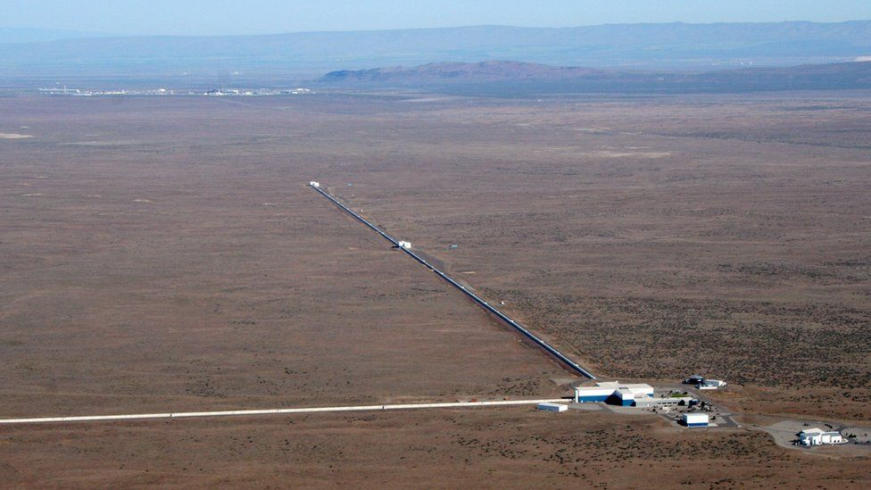

Previous
Next
first direct detection of gravitational waves is without doubt one of the most remarkable breakthroughs of our time. The Advanced LIGO laboratories in the US states of Washington and Louisiana have traced the warping of space from the merger of two black holes about 1.3 billion light-years from Earth.
It represents the last great confirmation of Einstein's ideas, and opens the door to a completely new way to investigate the Universe. Astronomy and other fields of science are now entering a new era.
So, what exactly are gravitational waves?
According to Einstein's General Theory of Relativity, any accelerating mass should produce ripples in the fabric of space and time. The effect is very weak, however, and only the biggest masses, moving under the greatest accelerations, are expected to warp their surroundings to any appreciable degree. Put in this category the explosion of giant stars, the collision of ultra-dense dead ones, and the coming together of black holes. All these events should radiate gravitational energy at the speed of light.